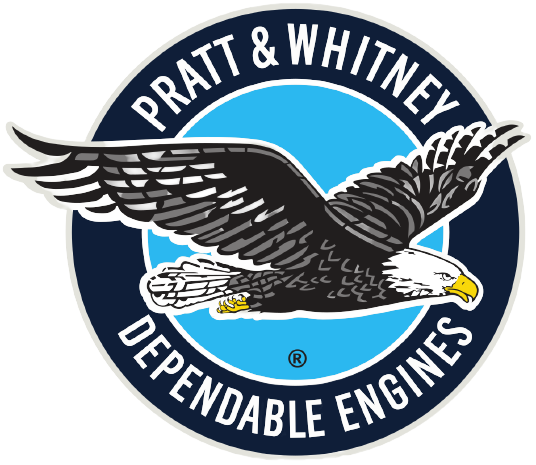
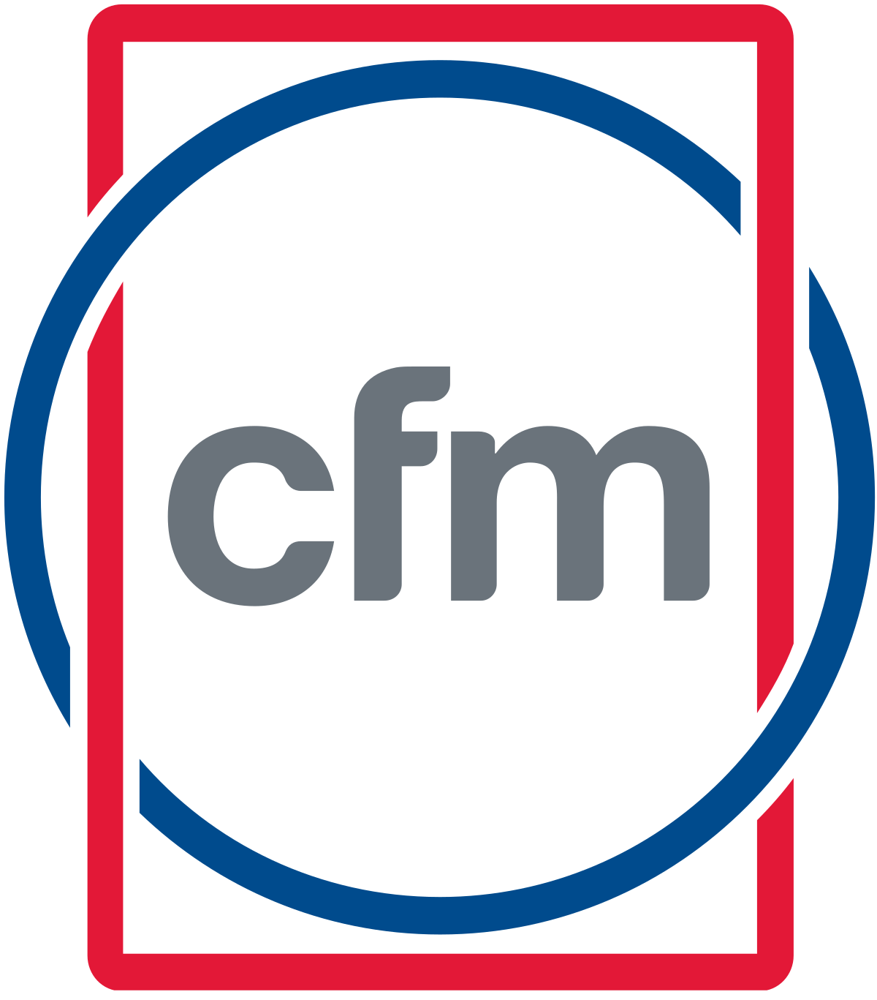
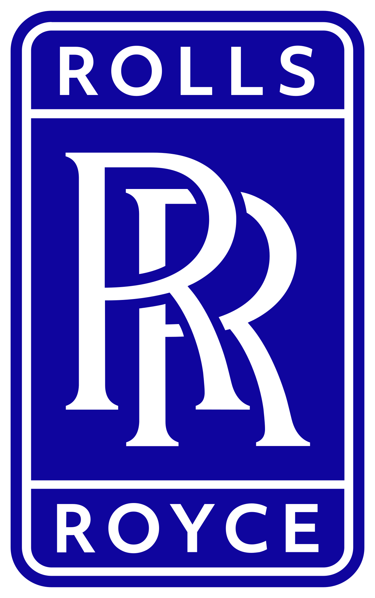

Moteur
Les moteurs sont essentiels pour les avions.
Sans ceux-ci un avion ne peut pas décoller.
Un réacteur est utilisé dans des grands et moyens d’avions de lignes.
Il est généralement équipé de 2 ou 4 moteurs (1 de chaque côté ou 2).
La plupart de réacteurs ne sont pas produit par les producteurs d’avion.
En effet il y a une entreprise qui produit ces moteurs pour les avions comme :
- - Pratt & Whitney
- 
- - CFM International
- 
- - Rolls Royce
- 
- - General Electrique
-

Ici deux A320 équipé de différent moteur :
Celui du haut est équipé du moteur CFM 56 et celui du bas le moteur d’IAE V2500.
Voici un moteur GE90 qui est utilisé sur les 777.
C’est l’un des moteurs le plus puissant du monde.
La taille de ce moteur correspond à la taille du fuselage d’un 737 !
Ici un moteur PW 1000G qui est utilisé sur les a220, famille a320neo ou encore les Embraer E2.
Il n’y a pas longtemps, ce moteur a causé des problèmes causant des atterrissages urgents.
Des a220 et certains a320neo ont été cloué pour inspection du moteur.
Ce moteur est un moteur CFM Leap 1A produit par CFM international.
Il est utilisé sur les familles a320neo et la famille b737max.
La différence entre le moteur CFM et PW sur les familles a320neo est l’intérieur.
Celui de CFM il est noir avec des traits blancs celui de PW il a une couche bleu-clair.
Leurs bruits sont eux aussi différents mais durs à distinguer (peu de bruit).